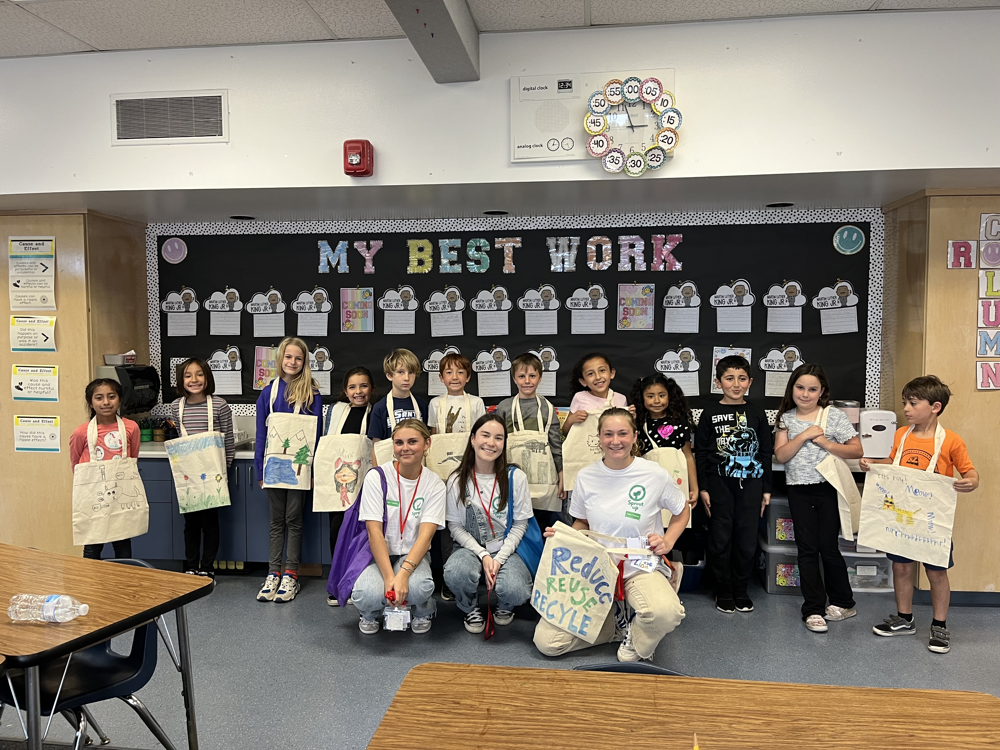
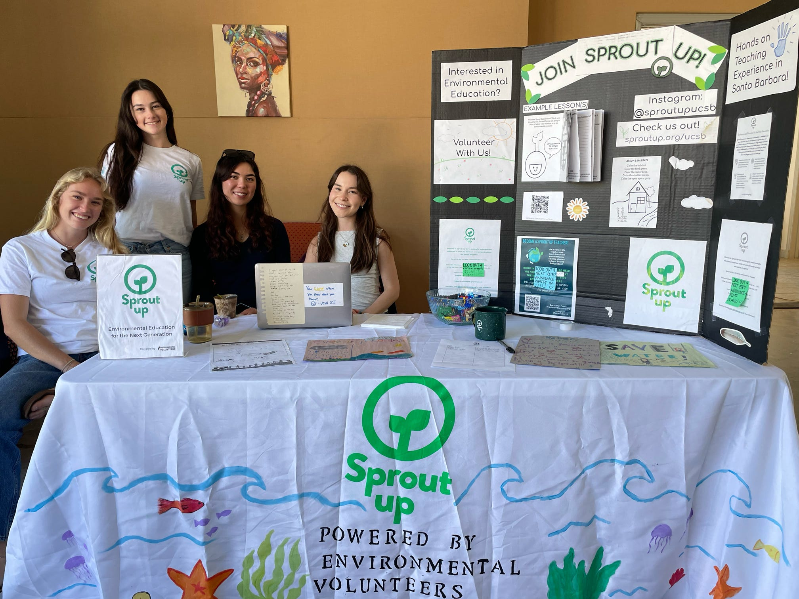
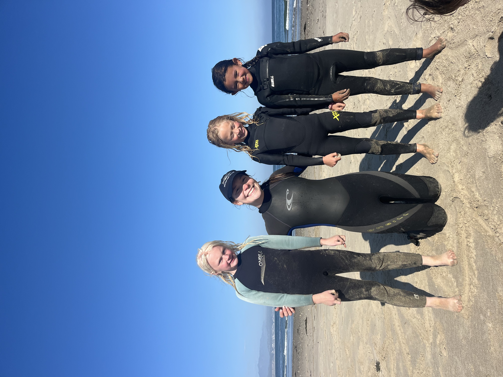

Sprout Up!
Environmental Education for the Next Generation

Overview

My Sprout Up journey started in Fall 2022 as an environmental science instructor in a second-grade classroom. Watching kids light up over water conservation, renewable energy, and strawberry DNA extraction made me realize just how much I love environmental education and science communication. I kept teaching every quarter, growing into a lead instructor role by Spring 2023, and stepping into my first leadership position as Development Manager by Fall 2023 — where I led grant applications that raised over $6,000 to help the program grow.

Now, as Director since Fall 2024, I oversee a team of 50+ volunteer instructors bringing weekly hands-on science lessons to Title I elementary schools across Santa Barbara. Beyond the classroom, Sprout Up hosts an annual 5K around the UCSB Lagoon Lawn, partners with organizations like Sea League and the Isla Vista Community Services District, and runs quarterly fundraisers to keep our programming accessible and growing. What started as a weekly classroom visit has turned into one of the most meaningful parts of my undergraduate experience — and a constant reminder that every child deserves to see themselves as a scientist.
Map of Sprout Up Santa Barbara Elementary Schools
Check out the map below to see all the elementary schools Sprout Up reaches!